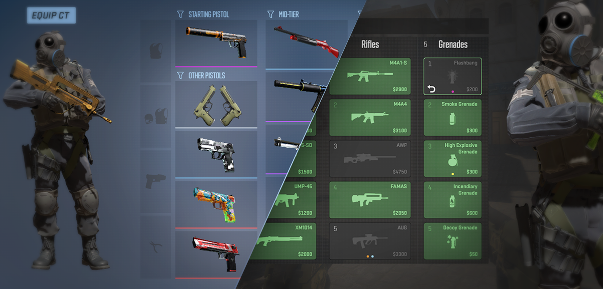
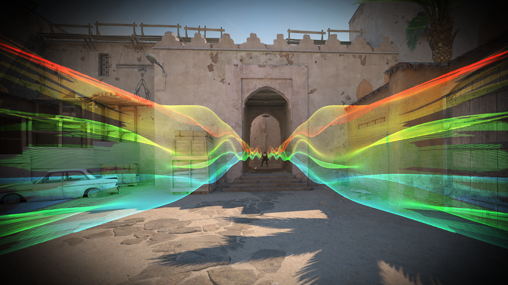
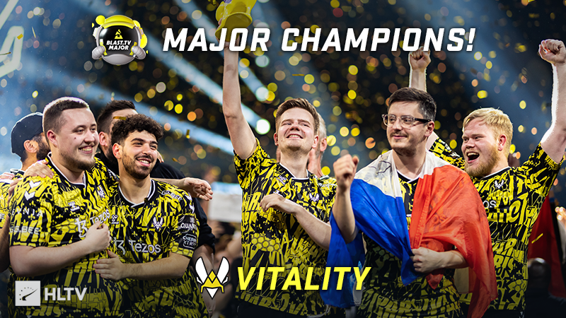
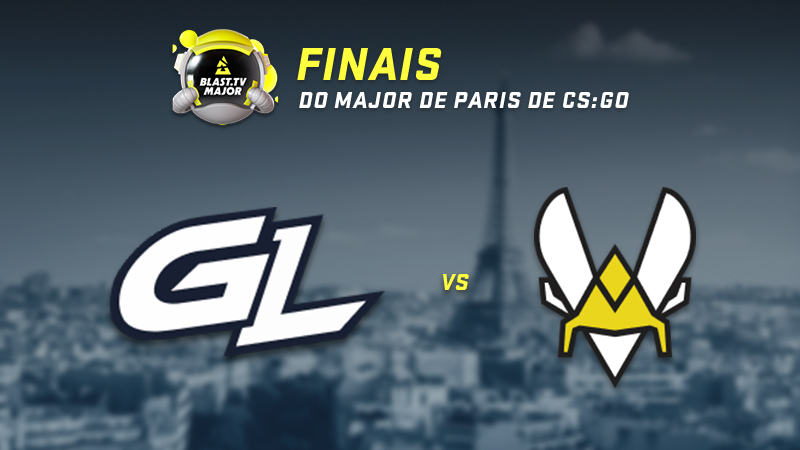

CS-GO 2 News
The next era of Counter-Strike begins this summer!
"Counter-Strike 2 represents the biggest technical advancement in Counter-Strike history,
ensuring new features and updates for many years to come. All the new features will be revealed
when the game is officially launched this summer, but the journey to Counter-Strike 2 begins
today with a limited test for selected CS:GO players.
During the test, we will evaluate a subset of features to address any possible issues before
the
global release. Counter-Strike 2 will be available this summer as a free update for CS:GO. So,
gear up with your arsenal, hone your skills, and get ready for what's coming!"

Farewell to the circular menu
Open the equipment menu to customise the weapons you take into battle! Make your
for the Terrorist and Counter Terrorist side, between four pistols, five medium
weapons (submachine guns and heavy weapons) and five rifles (yes, you can bring both M4s).
Simply drag and drop to adjust your purchase menu as you see fit.
as you see fit.
The buy menu has also received some improvements, such as a refund option for weapons you
you bought in the round but haven't used yet, as well as indicators to help you keep track of
the weapons
of the weapons being used by your teammates.

The Tickrate
Previously, the server only evaluated the state of the match at intervals of time called "ticks."
Counter-Strike 2 has been developed to utilize updates between ticks, known as "sub-ticks."
Thanks to the sub-tick update architecture of Counter-Strike 2, servers now know the exact
moment when a movement is initiated, a bullet is fired, or a grenade is thrown.
As a result, regardless of the tickrate, your movement and shots will have the same
responsiveness, and your grenades will always behave consistently.

Last Major News
Team Vitality - Champions of the Major!
Congratulations to Team Vitality, the champions of the BLAST.tv Paris Major! The team defeated
GamerLegion and delivered a dominant performance, navigating through the event without losing a
single map.
Today, we are launching the autograph capsule of the Paris 2023 champions, featuring
autograph
stickers from apEX, dupreeh, Magisk, Spinx, and ZywOo. Celebrate the victory of the champions in
grand style with these stickers available in paper, Glitter, Holo, and Gold variants!

The Grand Final
The BLAST.tv Paris Major started with 24 teams, and now we are left with two finalists:
- GamerLegion
- Team Vitality.
In the Champions Stage, GamerLegion defeated Monte (2-0) and Heroic (2-1) on their path to the
grand final.
Playing on their home turf, Team Vitality defeated Into the Breach and Apeks with 2-0 victories
on consecutive days.
The grand final of the last CS:GO Major will take place tomorrow, May 21st, at the Accor Arena
in Paris.
Good luck to the finalists!

On the way to the finals
The Legends Stage of the BLAST.tv Paris Major has concluded, and everything is set for the
Champions Stage. The following teams will compete in the final CS:GO Major for the championship
title:
3-0:
Heroic
Vitality
3-1:
GamerLegion
Monte
Team Liquid
3-2:
Apeks
FaZe
Into the Breach
The quarterfinals will begin on Thursday, May 18th, at 5 PM (Lisbon time).
The outcome of the Legends Stage means that you can now make your predictions for the Champions
Stage in the Pick'Em Challenge.
Good luck to the final eight teams!

Last Updates News
Release Notes for 6/14/23
[ MAPS ]
Mirage
Fixed a spot near bench that caused the server to lag
Fixed various strange wallbangs
Adjusted end of match screen
[ BUY MENU ]
Fixed some edge case issues with sell back
Buy menu color now matches cl_hud_color
br
[ LOADOUT ]
Fixed edge cases with inspecting items
Fixed a bad interaction between the acknowledge panel and inventory
Fixed a glitch while refreshing the loadout tab
Fixed some localization bugs
Fixed various crash
[ MISC ]
Fixed movement bug that would cause a slide along curbs in Dust II
Flashbangs can be redeployed after thrown so that players can quickly throw multiple in sequence
Reduced the single-frame flash effect when zooming out with sniper rifles
Release Notes for 09/06/2023
[CASE DISTRIBUTION]
Players now receive a weapon case when they rank up for the first time in a week, instead of
receiving one after a certain amount of playtime (on a server).
CS2
[LIMITED TEST ACCESS]
A second wave of users is about to receive access to the limited test.
[MAPS]
Mirage:
Bullets no longer pass through the door towards the connector.
A gap in the stack of crates at the top of the central area has been blocked.
A gap near the ticket booth has been blocked.
It is once again possible to jump onto one of the boxes at bombsite A.
Various player collision and grenade collision bugs have been fixed.
Various graphical bugs have been fixed.
[WEAPONS]
A problem with the C4 explosive disappearing from the match if a player carrying it disconnected
has been fixed.
Bonus weapons in Deathmatch mode can now include the weapons equipped in the loadout menu.
The "Swap on CT" context menu option has been added for the USP-S when the P2000 is equipped,
and vice versa.
Drag and drop operations are now automatically canceled when exiting the loadout menu.
The appearance of the SCAR-20 and G3SG1 has been improved.
[WORKSHOP TOOLS]
A bug in the resource compiler that created unwanted files when executed in directories with
spaces in the name has been fixed.
08/06/2023 Update Details
[VOLUMETRIC SMOKE]
The smoke expansion algorithm used when smoke grenades explode very close to a wall has been
fixed.
A function for AMD hardware has been adjusted.
[ANIMATIONS]
Reload animations have been adjusted to allow for smoother transitions between different states.
Reload events for FAMAS and MP5-SD have been added to coincide with the moment the magazine is
fully inserted.
[GENERAL]
A regression with the death list panel has been fixed.
An issue with item confirmation controls in the interface that sometimes did not work has been
fixed.
Various stability improvements have been made.
[WEAPONS]
A regression related to high recoil weapons such as the MAG-7, where the first-person model
sometimes moved downward instead of upward, has been fixed.
The appearance of the following weapons has been improved: UMP-45, MAG-7.
[WORKSHOP TOOLS]
A problem that resulted in displaying old models when previewing new weapon skins has been
fixed.
[SOUND]
A regression that caused the 10-second warning music to sometimes not play has been fixed.
An issue with wooden stairs not playing appropriate sounds for footsteps on wooden surfaces has
been fixed.